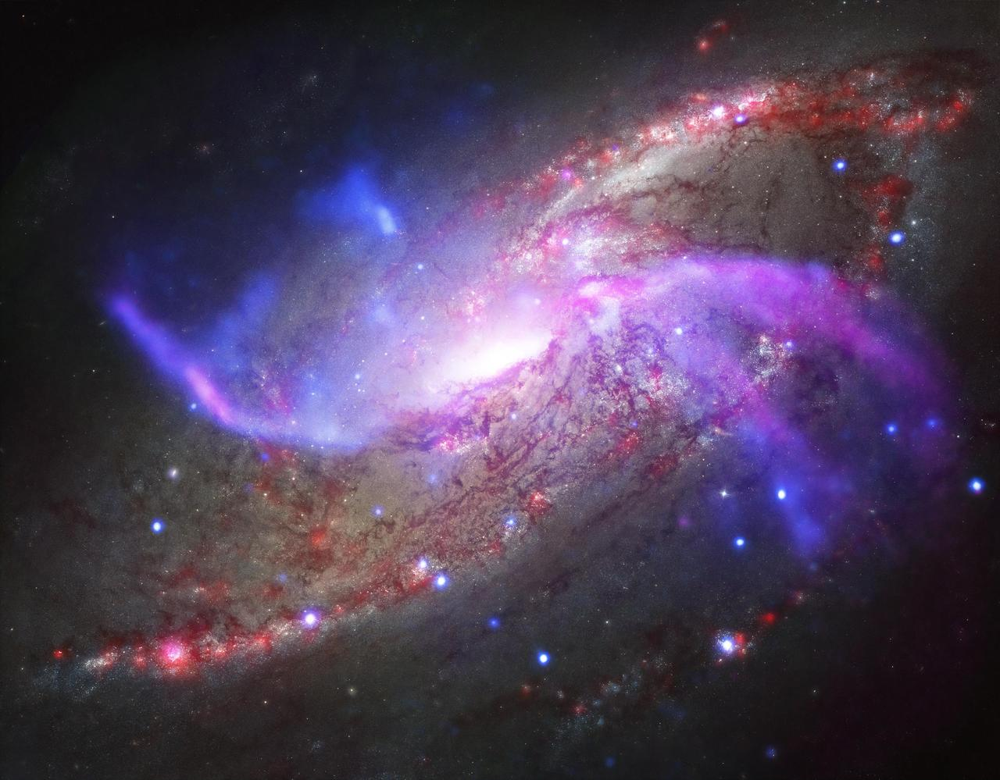
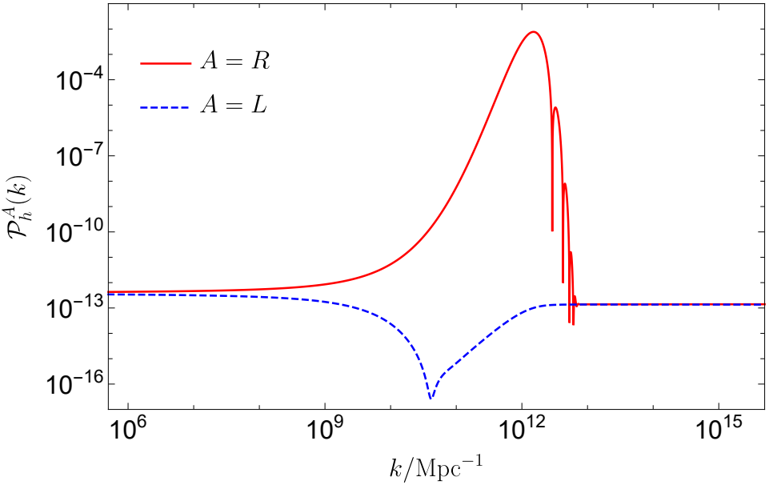
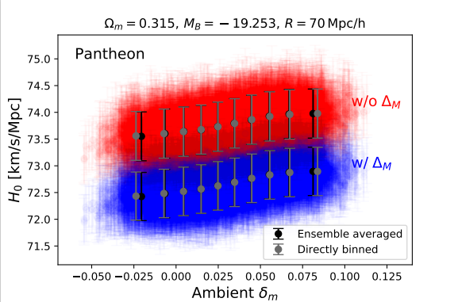
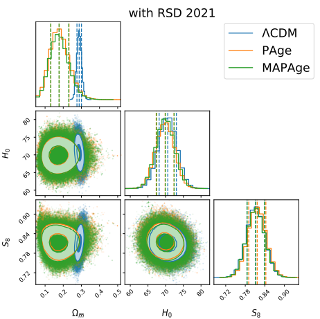
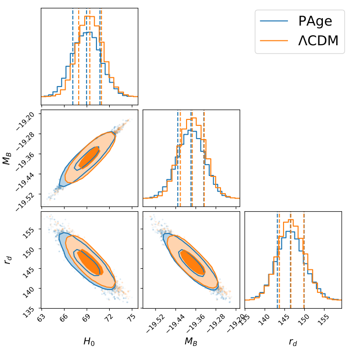
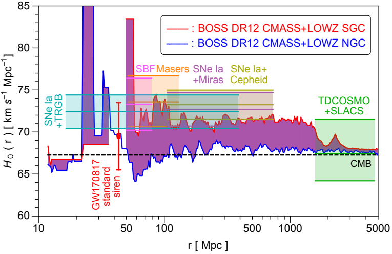
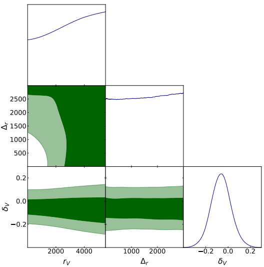

<!DOCTYPE html>

<html lang="en">
    <head>
        <meta charset="UTF-8">
        <meta name="viewport" content="width = device-width, initial-scale = 1.0">
        <meta http-equiv="X-UA-Compatible" content="ie=edge">
        <title>Wang-Wei Yu</title>
        <!-- reset -->
        <link rel="stylesheet" href="./css/reset.css">
        <!-- public -->
        <link rel="stylesheet" href="./css/base.css">
        <!-- current -->
        <link rel="stylesheet" href="./css/research.css">
        <!-- portrait -->
        <link rel="icon" href="./pic/favicon.ico">
        <!-- Js -->
        <script src="./js/app.js"></script>
        <script src="https://polyfill.io/v3/polyfill.min.js?features=es6"></script>
        <script id="MathJax-script" async src="https://cdn.jsdelivr.net/npm/mathjax@3/es5/tex-mml-chtml.js"></script>
</html>

<body>
    <div class="topbar-wrapper">
        <div class="topbar w clearfix">
            <nav class="nav-button">
                <div class="bg"></div>
                <button class="button"></button>
            </nav>
            <ul class="service">
                <li><a href="./index.html">Wang-Wei Yu</a></li>
            </ul>

            <ul class="service1">
                <li><a href="./me.html">About Me</a></li>
                <li class="line">|</li>
                <li><a href="./CV.html">CV</a></li>
                <li class="line">|</li>
                <li><a id="current" href="./reseach.html">Reseach</a></li>
                <li class="line">|</li>
                <li><a href="./publications.html">Publications</a></li>
                <li class="line">|</li>
                <li><a href="./seminars.html">Seminars</a></li>
            </ul>
        </div>
    </div>

    <div class="webcover w">
        
    </div>
    <div class="window"> 
        <div class="fp clearfix">
        
            <!-- <p>I peer into many respects in Cosmology and Astrophysics.</p>
            <div class="picHubble">
                
                <p>Credit: Riess <a href="https://arxiv.org/abs/2001.03624">[arXiv:2001.03624]</a></p>
            </div>
            
            <p id="HubbleTension"> 
                The <i>Hubble Constant</i>, \( H_0 \), is the nowadays <i>Hubble Parameter</i>. In \( \Lambda \)CDM model, it must be a <i>Constant</i>.
                There are many ways to measure <i>Hubble Constant</i>. The <i>Cosmic Microwave Background (CMB)</i> experiment induce \( H_0 \) by assuming the \(\Lambda \)CDM model and gives \( H_0 = 67.4 \pm 0.5 \ \mathrm{km \ s^{-1} \ Mpc^{-1}} \).
                But, the <i>SHOES</i> experiment gives \(H_0 = 73.04 \pm 1.04  \ \mathrm{km \ s^{-1} \ Mpc^{-1}} \) by using the inverse distance ladder method.
                If we assume the two experiment results are right, there is must a sign about physics beyond \( \Lambda \)CDM model.
            </p>

            
            <p>
                I am very curious about why the value of <i>Hubble Constant</i> in late-time and in early-time don't match. Thus, I want to find out what can or what can't cause the <i>Hubble Tension</i>. 
                    We put forward a chameleon late-time dark energy model (see <a href="https://arxiv.org/abs/2102.02020">[arXiv:2102.02020]</a>) 
                    where the more matter density, the more the dark energy. In our model, if we live in a local overdensity region, we would get a higher value of Hubble Constant in the late-time Universe.
                    What's more, our model permits an inhomogeneous  and anisotropic Universe. Thus, the <i>Hubble tension</i> would be translated into the <i>Hubble diversity</i>.
                    On the other hand, we found many extensions of \( \Lambda \)CDM model in late-time Universe could not resolve the Hubble tension
                    (see<a href="https://arxiv.org/abs/2107.13286">[arXiv:2107.13286]</a> and <a href="https://arxiv.org/abs/2202.12214">[arXiv:2202.12214]</a>).
                    But, our chameleon late-time dark energy model might escape our "no-go guide" constraints.
                    I want to know how to resolve the Hubble tension.
            </p>

            <div class="picPV">
                
                <p>Rong-Gen Cai, Chengjie Fu, Wang-Wei Yu <a href="https://arxiv.org/abs/2112.04794">[arXiv:2112.04794]</a></p>
            </div>

            <p id="GWs"> I am Interested in the Gravitational Wave Physics (GWs). The GWs could reach what the light couldn't 
                touch.
                I do some researches about <i>Stochastic  Gravitational Wave Background (SGWB)</i>. I spare some time to do same data analysis of LIGO/VIRGO SGWB data and <i>Pulsar Timing Array (PTA)</i>.
                
            </p>

            

            <p id="Astrophysics"> The <i>Hubble tension</i> might be an astrophysics problem, which makes me peer into Astrophysics.
                I focus on the properties of supernovae. We found that there is a relationship between the apparent magnitude of supernovae
                and the ambient density contrasts. It is very interesting.
            <p>

            <p id="EarlyUniverse"> The early Universe is very curious to me. I study the inflation and found some potential parity violation signals of GWs. The signals could 
                be detected by GWs experiments in the future  (see<a href="https://arxiv.org/abs/2112.04794">[arXiv:2112.04794]</a>).
                I am Interested in the <i>Early Universe</i>. There are many interesting physics which is ready to be found at that time.
        </div>

        

        

        <div class="pn">
            <ul>
            <li><a href="#HubbleTension">Hubble Tension</a></li>
            <li><a href="#GWs">Gravitational Waves </a></li>
            <li><a href="#Astrophysics">Astrophysics</a></li>
            <li><a href="#EarlyUniverse">Early Universe</a></li>
            <li><a href="javascript:;"></a></li>
            <li><a href="javascript:;"></a></li>
            </ul>
        </div>
    </div> -->

    <div class="container">
        <div class="card">
            <div class="imgBx">
                
            </div>
            <div class="content">
                
                <p>We have revealed a hidden trend in this one-percent H0 variation both theoretically
                    and observationally. We have derived for the first time our H0 variation measured 
                    from any discrete sample of distant SNe Ia.
                </p>
                <h2><a href="https://arxiv.org/abs/2209.14732">< Read More ></a></h2>
            </div>
        </div>
        <div class="card">
            <div class="imgBx">
                
            </div>
            <div class="content">
                <p> We further investigate the perspective of this improved inverse distance ladder method 
                    by including the late-time matter perturbation growth data. 
                    The previous late-time no-go guide for the Hubble tension is further strengthened. 
                </p>
                <h2><a href="https://arxiv.org/abs/2202.12214">< Read More ></a></h2>
            </div>
        </div>
        <div class="card">
            <div class="imgBx">
                
            </div>
            <div class="content">
                <p>
                    We study the inflationary implications of a novel parity-violating gravity model, 
                    which modifies the teleparallel equivalent of general relativity by introducing 
                    the Nieh-Yan term coupled to an axion-like field.
                </p>
                <h2><a href="https://arxiv.org/abs/2112.04794">< Read More ></a></h2>
            </div>
        </div>
        <div class="card">
            <div class="imgBx">
                
            </div>
            <div class="content">
            <p>
                We propose to use a global parametrizationbased on the cosmic age (PAge) to consistently 
                use the cosmic chronometers data beyond the Taylor expansion domain and without the input 
                of a sound-horizon prior.
            </p>
            <h2><a href="https://arxiv.org/abs/2107.13286">< Read More ></a></h2>
        </div>
        </div>
        <div class="card">
            <div class="imgBx">
                
            </div>
            <div class="content">
                <p>  We propose a late-time inhomogeneous resolution suggesting that
                     a chameleon field coupled to a local overdensity of matter as an effective 
                     cosmological constant driving the local expansion rate faster than that of the background.
                </p>
                <h2><a href="https://arxiv.org/abs/2102.02020">< Read More ></a></h2>
            </div>
        </div>
        <div class="card">
            <div class="imgBx">
                
            </div>
            <div class="content">
                <p>  Our conclusion strengths the previous studies that the current tension on Hubble constant 
                    cannot be saved by a local void alone. 
                </p>
                <h2><a href="https://arxiv.org/abs/2012.08292"> < Read More > </a></h2>
            </div>
        </div>
    </div>
    
    <a style="display: none; font-size: 40px;" href = "javascript:;" class="backToTop" title="Back to Top" id="backToTop"> &#8682; </a>

</body>
